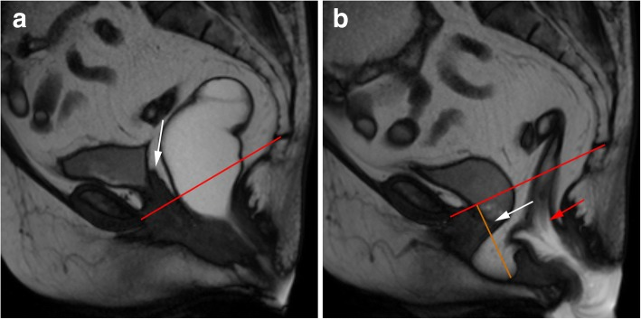
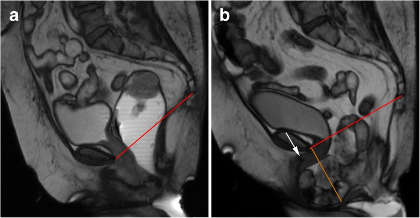
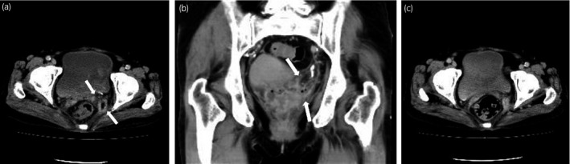

561 — Sa tạng chậu tái phát sau cắt lưới: treo lại mô tự thân hay lưới mới? / Recurrent prolapse after mesh removal
Tags: pattern:sa-tang-tai-phat pattern:hong-luoi pattern:sa-dinh vung:am-dao vung:tieu-khung score:POP-Q score:IUGA-ICS protocol:MRI-san-chau protocol:sieu-am-translabial incidentaloma:luoi-con-lai
Mức chắc chắn (certainty): tổng hợp y văn (literature synthesis) — tự biên từ RCT 7 năm so sánh lưới âm đạo với mô tự thân ở sa tái phát (Milani AL et al., Int Urogynecol J 2018, PMC5948295), đoàn hệ sa đỉnh toàn quốc Thụy Điển (Brunes M et al., Acta Obstet Gynecol Scand 2022, PMC9564691), đoàn hệ lưới tái phát (Curtiss N & Duckett J, Gynecol Surg 2018, PMC5762801) và dịch vụ biến chứng lưới tuyến 4 (Badri H et al., BMC Womens Health 2025, PMC12317572); không gắn một bệnh án đơn lẻ.
1. Tổng quan bệnh học – cơ chế hình ảnh: sa tái phát là "thoát vị qua lỗ hoành chậu", không phải "lưới hỏng" đơn thuần
- Sa tạng chậu (pelvic organ prolapse — POP) là thoát vị của bàng quang, tử cung/đỉnh âm đạo hoặc ruột qua lỗ hoành chậu (levator hiatus) — cổng thoát vị được giới hạn bởi xương mu phía trước và cơ nâng hậu môn (levator ani) hai bên–sau. Vì vậy phẫu thuật nào cũng chỉ "vá cổng", không chữa được chất lượng cơ–mạc.
- Tỷ lệ tái phát chung sau mổ POP khoảng 30% (Brunes 2022, PMC9564691). TẠI SAO: (1) rách/bong cơ nâng (levator avulsion) gặp 10–35% sau sinh đường âm đạo lần đầu, làm OR tái phát khoang trước 2,5–3,0; (2) giãn lỗ hoành (hiatal ballooning) — diện tích lỗ hoành khi Valsalva > 25 cm² là giới hạn bình thường trên, mỗi +1 cm² cộng thêm ~7% nguy cơ tái phát; (3) mô liên kết yếu (tuổi, di truyền, táo bón/mạn tính tăng áp lực ổ bụng).
- Sau khi cắt lưới (mesh removal), nền mô còn xấu hơn: sẹo xơ, thành âm đạo mỏng–ngắn, mất điểm treo đỉnh, có thể mất thêm cân bằng khoang; lưới còn sót tạo điểm căng và đường hầm nhiễm trùng. Vì vậy "sa tái phát sau cắt lưới" là bài toán chọn lại điểm treo, không phải "đặt lại lưới to hơn".
- Ngưỡng định lượng của 4 nghiên cứu trụ cột:
| Câu hỏi | Nghiên cứu | Số liệu chốt |
|---|---|---|
| Lưới có hơn mô tự thân ở sa tái phát? | RCT 7 năm, 190 ca mổ (Milani 2018) | Thành công tổng hợp 53% lưới vs 54% mô tự thân; mổ lại vì POP 25% vs 16% (chênh 9%; KTC 95% −5 đến 23); lộ lưới 42% |
| Vì sao mổ lại không giảm? | Milani 2018 | Ở nhóm lưới, tái phát xảy ra ở khoang KHÔNG được đặt lưới; ở nhóm mô tự thân, tái phát ở khoang đã mổ |
| Lưới cải thiện triệu chứng? | Đoàn hệ 48 lưới vs 25 colporrhaphy lặp (Curtiss 2018) | "Tốt hơn nhiều" 69% vs 40% (p = 0,02); xói mòn 11,6%; mổ lại 33% vs 32% |
| Sa đỉnh: có ghép hay không ghép? | Toàn quốc 1.812 ca (Brunes 2022) | SSLF không ghép có nguy cơ mổ lại cao hơn có ghép aOR 2,2 (KTC 1,4–3,6); sa đỉnh bằng sacrocolpopexy ít biến chứng hơn SSLF (aOR 2,2–2,3) |
| Sau cắt lưới thì sao? | 288 ca được mổ trong 785 ca (Badri 2025) | 52% cắt toàn bộ lưới; són tiểu khi gắng sức tái phát 66% (141/215); POP tái phát 23% (3/13); biến chứng phẫu thuật 18%, nặng 0,7% |
| Thời điểm cắt lưới | 345 ca (Elneil 2024) | Trung bình 7 năm từ đặt đến cắt; đau là lý do hàng đầu |
- TẠI SAO hình ảnh học khó — vật lý: polypropylene không có proton di động → giảm tín hiệu mạnh trên T2W (đen), trùng với sẹo xơ hậu phẫu cũng đen; trên siêu âm lưới tăng hồi âm kèm bóng lưng. Vì vậy câu hỏi đúng không phải "có thấy lưới không" mà là "lưới còn liên tục, còn treo đúng trục, có dịch/ngấm thuốc quanh không", và "tạng nào đang sa, dưới mốc nào".
2. Mẫu hình + chẩn đoán phân biệt theo khoang và theo cơ chế (Gamut)
- Theo khoang (định vị trước khi chọn kỹ thuật):
- Khoang trước (anterior): sa bàng quang (cystocele) — hay tái phát nhất sau colporrhaphy, đặc biệt khi có avulsion.
- Khoang giữa/đỉnh (apical): sa đỉnh âm đạo sau cắt tử cung (vault prolapse), sa ruột non (enterocele), sa tử cung.
- Khoang sau (posterior): sa trực tràng (rectocele), sa ruột non vào vách âm đạo–trực tràng.
- Đa khoang: thường là lý do cân nhắc lưới/sacrocolpopexy thay vì "vá từng khoang".
- Theo cơ chế sau cắt lưới:
- Hỏng lưới cơ học: lưới bong khỏi mỏm nhô/mỏm ngồi–mu, lưới chùng đi đường vòng, đứt — sa tái phát mà không thấy lưới lộ.
- Lưới co kéo (mesh contraction/meshoma): lưới nhăn, cứng, đau khu trú, giao hợp đau.
- Nhiễm trùng đường lưới/áp-xe: dịch quanh lưới, đau, tiết dịch; có thể hoại tử thành âm đạo.
- Khoang chưa xử lý: lưới chỉ che khoang trước nhưng đỉnh vẫn thiếu hỗ trợ → sa đỉnh "mới".
- Thất bại mô tự thân: cân bằng bị rách lại, avulsion, lỗ hoành giãn.
- Gamut "kẻ giả danh" khi khám/ảnh: sa niệu đạo–bàng quang không triệu chứng (POP-Q độ 2, không cần mổ); nang âm đạo/Gartner; áp-xe thành âm đạo; sa bàng quang giả do bàng quang căng; đau sàn chậu cơ–mạc không kèm sa; u âm đạo (hiếm).
- Bốn câu hỏi bắt buộc — mnemonic "APEX": Anterior? Posterior? Enterocele/apex? X-mesh (lưới còn gì, có nhiễm/co kéo không) — trả lời sai một câu là chọn sai kỹ thuật.
3. Bảng so sánh phân biệt (ma trận đối chiếu)
| Thực thể (entity) | Hình ảnh điển hình | Chốt vào (rule-in) | Chốt loại (rule-out) | Gợi ý xác nhận |
|---|---|---|---|---|
| Sa tái phát khoang trước sau mô tự thân | MRI động: bàng quang xuống > 3 cm dưới PCL khi rặn; US: bóng bàng quang xuống dưới khớp mu | Bàng quang xuống > 3 cm dưới PCL + triệu chứng | Bàng quang trên PCL, không triệu chứng → không phải tái phát | POP-Q + MRI động |
| Sa đỉnh/vault prolapse + enterocele | MRI sagittal: đỉnh âm đạo dưới PCL, quai ruột non chui vào vách | Đỉnh âm đạo dưới PCL + quai ruột trong vách | Chỉ kéo dài âm đạo mà đỉnh trên PCL → không sa đỉnh | MRI động, khám thì đầu |
| Hỏng lưới cơ học | MRI: đường lưới không liên tục, đầu tự do, lưới đi vòng; sa tái phát | Lưới đứt/bong + sa đúng khoang đã treo | Lưới liên tục, đúng trục → tái phát do mô | MRI + nội soi |
| Lưới co kéo/meshoma | MRI: bó lưới dày, nhăn, co, viền xơ; đau khi khám | Lưới cứng + đau khu trú | Lưới mềm, không đau → không co kéo | Khám + MRI |
| Nhiễm trùng/áp-xe quanh lưới | CT: dịch quanh lưới, thành ngấm thuốc; MRI: dịch + viêm mô | Dịch/áp-xe + sốt/tiết dịch | Chỉ lưới đen, không dịch → không nhiễm | CT/MRI + cấy |
| Sa do avulsion/lỗ hoành giãn | US 4D: mất bám cơ nâng, diện tích lỗ hoành > 25 cm² | Avulsion + lỗ hoành > 25 cm² | Cơ nâng liền, lỗ hoành < 25 cm² → mô tự thân còn hợp lý | US translabial 4D |
| Ứng viên colpocleisis | Không cần ảnh đặc hiệu; khám: sa độ 3–4, teo âm đạo | Lớn tuổi, không còn giao hợp, nhiều bệnh nền | Còn nhu cầu giao hợp → loại | Khám + tư vấn |
| U âm đạo/ung thư (hiếm) | Khối/mảng cứng, loét, ngấm thuốc bất thường | Mô bệnh ác tính | Tổn thương mềm, đối xứng, không loét | Sinh thiết |
4. Protocol chụp + hệ phân độ & quy trình chọn kỹ thuật
- Bước 1 — POP-Q (Pelvic Organ Prolapse Quantification): đo 6 điểm (Aa, Ba, C, D, Bp, Ap) + gh (genital hiatus), pb (perineal body), tvl (total vaginal length). Độ 1: điểm xa nhất < −1 cm** (còn hơn 1 cm **trên** màng trinh); **độ 2:** **−1 đến +1 cm**; **độ 3:** **> +1 cm nhưng chưa lộn toàn bộ; độ 4: lộn toàn bộ. Tái phát có triệu chứng thường được định nghĩa ≥ độ 2; đừng điều trị một độ 2 không triệu chứng.
- Siêu âm translabial/4D (translabial ultrasound): đầu dò 3,5–6 MHz (4D cần góc mở 70–90°), quét mặt phẳng trung sagittal khi nghỉ và Valsalva tối đa; đo diện tích lỗ hoành (bình thường < 25 cm²), tìm avulsion cơ nâng; lưới tăng hồi âm dạng "cánh hải âu"/chữ U. Không tia X, làm tại giường, lặp lại được.
- MRI động sàn chậu (dynamic pelvic floor MRI): 1,5 hoặc 3 T; sagittal T2 TSE độ phân giải cao + TrueFISP/balanced SSFP cine khi nghỉ, gắng sức và rặn phân; lát 3 mm, FOV 26–30 cm; đặt gel âm đạo/trực tràng; lặp ít nhất 3 lần rặn vì tổn thương có thể chỉ lộ ở lần cuối. Đo theo đường PCL (pubococcygeal line) nối bờ dưới khớp mu với khớp cùng–cụt cuối: sa khoang trước/giữa đáng kể khi > 3 cm dưới PCL, khoang sau > 4 cm khi rặn.
- MRI tĩnh T2/T1 + T1 fat-sat sau tiêm: đánh giá đường đi, độ liên tục, độ dày lưới, dịch/áp-xe, rò; DWI khi nghi áp-xe/ung thư.
- CT bụng–chậu có cản quang: khi nghi áp-xe, rò, tắc ruột, tổn thương niệu quản; không dùng để "tìm lưới".
- Nội soi bàng quang/niệu đạo: trước khi cắt lưới nếu có triệu chứng tiểu dưới, đái máu, nhiễm trùng tái diễn.
- Phân độ biến chứng lưới IUGA/ICS (Category–Time–Site): nhóm 3 = lộ lưới, 4 = đường tiểu, 5 = ruột, 6 = mạch máu, 7 = thần kinh; thời điểm T1 ≤ 48 giờ, T2 48 giờ–2 tháng, T3 2–12 tháng, T4 > 12 tháng — dùng ngôn ngữ chung, không thay khám.
flowchart TD
A[Sa tai phat sau cat luoi] --> B[Kham POP-Q + soi am dao]
B --> C{Con luoi trong co the?}
C -->|Khong| D{Sa khoang nao}
C -->|Co| E[US translabial + MRI dong]
E --> F{Luoi hong co hoc hoac nhiem}
F -->|Hong co hoc| G[Go luoi con lai + danh gia mo]
F -->|Nhiem hoac ap xe| H[Cat luoi + dan tru dich + khang sinh]
F -->|Khong| I[Dieu tri dau + vat ly tri lieu]
D --> J{Avulsion hoac lo hoanh tren 25 cm2 hoac da khoang}
J -->|Khong| K[Treo lai mo tu than: colporrhaphy hoac SSLF hoac uterosacral]
J -->|Co| L{Tuoi va nhu cau giao hop}
L -->|Lon tuoi khong giao hop| M[Colpocleisis]
L -->|Con tre, da khoang, that bai lap lai| N[Sacrocolpopexy hoac luoi moi co chi dinh]
G --> O[Tu van nguy co tai phat va son tieu]
H --> O
K --> P[Theo doi 6 tuan 6 thang 1 nam]
M --> P
N --> P
- Chọn mô tự thân hay lưới mới — nguyên tắc định lượng:
- Mô tự thân là mặc định cho tái phát một khoang, thành âm đạo còn dày, không avulsion, lỗ hoành < 25 cm²; lựa chọn: colporrhaphy trước/sau, treo đỉnh bằng dây chằng cùng–gai (SSLF) hoặc dây chằng tử cung–cùng (uterosacral suspension).
- SSLF nên kèm ghép (graft) nếu đã tái phát: nguy cơ mổ lại aOR 2,2 khi không ghép (Brunes 2022).
- Cân nhắc lưới khi nguy cơ tái phát rất cao: avulsion + lỗ hoành giãn; RCT nhỏ ở 72 phụ nữ có avulsion cho thấy tái phát 3% với lưới toàn bộ (Total Prolift) vs 65% với SSLF (lâm sàng) và 2,8% vs 61,7% trên siêu âm sau 12 tháng — nhưng đây là nhóm chọn lọc, không mở rộng cho mọi ca.
- Sacrocolpopexy (lưới qua bụng/robot) là lựa chọn cho sa đỉnh/đa khoang, đặc biệt sau khi đã cắt lưới âm đạo; đoàn hệ toàn quốc cho thấy ít biến chứng 1 năm hơn SSLF (aOR 2,2–2,3), còn hiệu quả mổ lại tương đương SSLF có ghép trong dữ liệu quan sát.
- Colpocleisis (khâu bịt âm đạo) ít được dùng nhưng hiệu quả cao ở người lớn tuổi, không còn giao hợp, nhiều bệnh nền — phải loại trừ ung thư cổ tử cung/âm đạo trước.
- Sau cắt lưới toàn bộ, tư vấn rõ: trong 288 ca được mổ, són tiểu gắng sức tái phát 66% (141/215 ca được theo dõi) và POP tái phát 23% (3/13 ca được theo dõi POP) (Badri 2025); đặt kế hoạch treo lại ngay trong cùng cuộc mổ khi mô cho phép, hoặc hẹn đánh giá 3–6 tháng.
- Theo dõi: khám + POP-Q 6 tuần, 6 tháng, 1 năm, sau đó hàng năm; soi âm đạo tìm lộ lưới muộn T3–T4 nếu còn lưới; siêu âm translabial khi có triệu chứng mới; không chụp định kỳ "tầm soát" bằng CT.
5. Biến thể bình thường và cạm bẫy
- Độ 2 không triệu chứng không phải thất bại: nhiều phụ nữ sau mổ có điểm POP-Q −1 cm mà không có sa triệu chứng; điều trị theo triệu chứng + độ, không theo ảnh.
- Sẹo hậu phẫu cũng đen trên T2: đừng gọi mọi bó giảm tín hiệu là "lưới còn sót"; cần tiền sử mổ, đường đi giải phẫu và khám.
- "Tái phát" ở khoang chưa mổ: sau đặt lưới khoang trước, sa đỉnh có thể là tiến triển tự nhiên của khoang chưa xử lý, không phải lưới hỏng (Milani 2018) — đừng mổ lại khoang trước lần nữa.
- Siêu âm phụ thuộc Valsalva: rặn không đủ lực → đo thiếu độ sa; luôn kiểm tra bàng quang đầy nửa, đầu dò đúng trục, và lặp lại.
- Bàng quang căng giả sa: đặt sonde/đi tiểu rồi đo lại trước khi kết luận.
- Sa đỉnh sau cắt tử cung dễ bị bỏ sót: nhìn "thành trước sa" nhưng thực ra là lộn đỉnh + enterocele; luôn đặt mỏ vịt thấy đỉnh âm đạo.
- Satisfaction of search: thấy lưới lộ rồi bỏ sót xuyên bàng quang/ruột hoặc sa khoang khác; trả lời đủ 4 câu APEX trước khi kết luận.
- Cắt lưới nhiều làm mất mô: cắt "sạch" quá tay có thể làm ngắn âm đạo, rò bàng quang–âm đạo; cân bằng giữa lấy hết lưới nhiễm và bảo tồn thành âm đạo.
6. Tự lượng giá — Blind Quiz
Ca 1 — Nữ 68 tuổi, cắt tử cung 10 năm trước, hiện sa đỉnh âm đạo tái phát sau mổ treo bằng lưới. MRI động sagittal TrueFISP lúc nghỉ (a) và khi rặn (b).

- Gợi ý lâm sàng: khối sa ra ngoài âm hộ khi đứng lâu, đau lưng dưới.
- Câu hỏi: (1) Đỉnh âm đạo nằm ở đâu so với PCL? (2) Ngoài sa đỉnh còn tổn thương gì? (3) Vì sao phải đánh giá cả khoang sau?
Bấm để hiện đáp án (findings + chẩn đoán)
- Dấu hiệu: (a) lúc nghỉ đỉnh âm đạo còn trên PCL; (b) khi rặn, đỉnh âm đạo xuống dưới PCL (mũi tên trắng) — sa đỉnh (vault prolapse); đồng thời có peritoneocele (mỡ phúc mạc lách vào vách âm đạo–trực tràng, đường cam) và lồng ruột trực tràng (mũi tên đỏ).
- Chẩn đoán: sa đỉnh âm đạo tái phát + peritoneocele + lồng niêm mạc trực tràng.
- Vì sao đánh giá khoang sau: peritoneocele/enterocele chỉ lộ khi rặn; nếu chỉ treo đỉnh mà bỏ qua túi thoát vị phía sau, sa sẽ tái phát.
- Nguồn ảnh: Salvador JC et al., Insights Imaging 2019, PMC6352388 Fig. 15, CC BY 4.0.
Ca 2 — Nữ 74 tuổi, sa nặng "như quả bóng", tiểu khó. MRI động sagittal TrueFISP lúc nghỉ (a) và khi rặn (b).

- Câu hỏi: (1) Tạng nào sa vào vách âm đạo? (2) Vì sao bàng quang căng và tiểu khó? (3) Kỹ thuật nào hợp lý nếu bệnh nhân không còn giao hợp?
Bấm để hiện đáp án (findings + chẩn đoán)
- Dấu hiệu: (b) quai ruột non chui vào vách âm đạo–trực tràng — enterocele nặng (đường cam); đỉnh âm đạo dưới PCL (sa đỉnh); khối thoát vị đẩy âm đạo và niệu đạo ra trước, làm ngang hóa trục niệu đạo (mũi tên trắng) và chèn ép bàng quang → bàng quang căng, tiểu khó.
- Chẩn đoán: enterocele nặng + sa đỉnh âm đạo + hẹp niệu đạo do chèn ép.
- Xử trí: bệnh nhân lớn tuổi, không còn giao hợp → colpocleisis (khâu bịt âm đạo) là lựa chọn hiệu quả, ít xâm lấn; nếu còn giao hợp → treo đỉnh (SSLF/sacrocolpopexy) + vá vách.
- Nguồn ảnh: Salvador JC et al., Insights Imaging 2019, PMC6352388 Fig. 16, CC BY 4.0.
Ca 3 — Nữ 55 tuổi, đau vùng chậu và sốt sau sacrocolpopexy 2 năm. CT bụng–chậu có cản quang.

- Gợi ý lâm sàng: sốt, đau sâu trong chậu, CRP tăng, không tiết dịch âm đạo.
- Câu hỏi: (1) Bất thường ở đâu? (2) Chẩn đoán? (3) Có phải cắt toàn bộ lưới không?
Bấm để hiện đáp án (findings + chẩn đoán)
- Dấu hiệu: (a) khối dịch 6,5 × 1,5 cm² thành sau chậu, viền ngấm thuốc nhẹ (mũi tên); (b) mặt phẳng trán xác nhận ổ áp-xe; (c) sau dẫn lưu + kháng sinh, ổ dịch hết hoàn toàn.
- Chẩn đoán: áp-xe quanh lưới sau sacrocolpopexy — biến chứng nhiễm trùng đường lưới.
- Cắt lưới bao nhiêu: ổ khu trú + hết sau dẫn lưu có thể chỉ cần cắt lưới khu trú; nhưng nếu nhiễm lan tỏa, lộ lưới lớn, xuyên tạng → cắt toàn bộ (52% ca trong dịch vụ chuyên khoa chọn cắt toàn bộ). Tư vấn trước: són tiểu tái phát 66% (141/215) và POP tái phát 23% (3/13).
- Nguồn ảnh: Sato H et al., IJU Case Rep 2019, PMC7292078 Fig. 1, CC BY-NC 4.0 (giữ nguyên bản, không crop).
Bài liên quan chéo
- 557 – Biến chứng lưới nâng sa: lộ, xói mòn, xuyên tạng (nhận diện lưới trên MRI/US, phân độ IUGA/ICS)
- 547 – Sa tạng chậu nữ: POP-Q & lưới nâng (chọn bệnh nhân, đặt lưới lần đầu)
- 545 – MR động học sàn chậu (đọc sa theo khoang, PCL, H/M line)
- 556 – Đau sàn chậu cơ–mạc & đau thần kinh thẹn (đau không do sa/lưới)
- 548 – Nang/khối lành vùng âm hộ – âm đạo (kẻ giả danh khối sa)
- 500 – Tổng quan Hệ Vú & Sản Phụ khoa
Không dùng để chẩn đoán độc lập khi chưa có người hướng dẫn.